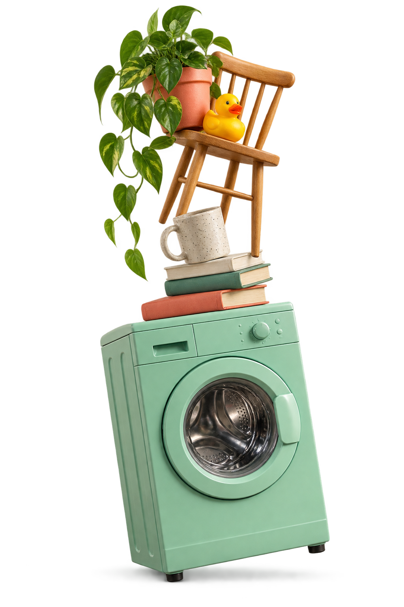

Votre maison, à votre façon
Des décorations enregistrées localement, un défi quotidien et des défis conçus à la main pour varier les parties.
Le jeu d’équilibre sur iPhone
Une machine à laver, des objets imprévisibles et une seule question : est-ce que ça tient ? Empilez, faites pivoter et trouvez le bon équilibre.
Découvrir sur l’App StoreSans compte de jeu. Avec achats intégrés et publicités.

Un objet, puis un autre.
À vous de trouver sa place.
Changez l’angle.
Cherchez le bon équilibre.
Observez ce qui se passe.
Et tentez encore.
Version 1.1 · À venir
De nouvelles pièces à explorer, de nouvelles façons de jouer. Voici un aperçu de la prochaine version.
Ces nouveautés et la capture ci-contre présentent la version 1.1, pas encore disponible sur l’App Store.
L’équilibre se prépare.
Version 1.1 à venir.
Achat intégré facultatif
Trois couleurs cosmétiques en plus.
Les publicités automatiques en moins.
Un achat permanent via Apple, restaurable depuis la boutique du jeu. Les vidéos récompensées restent facultatives. Aucun pack de pièces payant.
En savoir plus sur les achatsOn garde le contact
Une question sur le jeu, un achat ou vos données ?